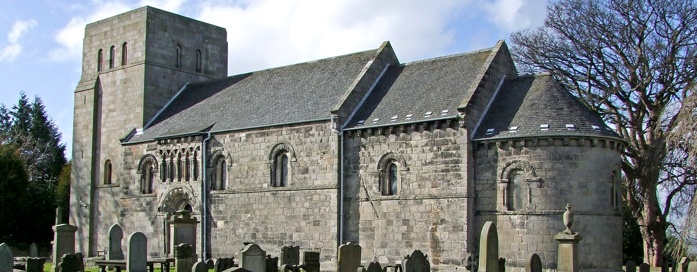

This will contain travel advice to get to the ceremony. For more information about the church itself, please visit its website by clicking the logo above.
Dalmeny Kirk is the Romanesque 12th century church at the heart of Dalmeny village. It is one of the best preserved Norman parish churches in Scotland.
